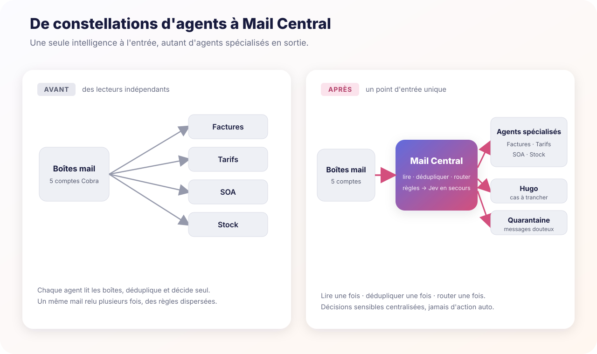

Cobra · Infra
Mail Central : un cerveau au-dessus des agents mail
Cobra s'est retrouvé avec une constellation d'agents mail très spécialisés — factures, tarifs, SOA, stock, tri quotidien — créés chacun à son moment, avec sa propre lecture des boîtes. Résultat : plusieurs agents lisaient le même message, le comprenaient différemment, ou traitaient chacun une copie. Mail Central est la couche qui s'installe au-dessus : elle lit les boîtes une seule fois, déduplique, applique les règles connues, puis route chaque message vers un seul propriétaire — un agent spécialisé, Hugo, ou la quarantaine.

Contexte — le problème
Chaque agent répondait à un vrai besoin et apportait sa propre expertise : achat-compta pour les factures fournisseurs, tarifs pour les grilles de prix, SOA pour les activations et opérations fournisseurs, stock pour les catalogues dropship, plus un agent de tri quotidien pour l'attention, les réponses et les relances. Mais chacun avait été construit isolément, avec ses propres règles et parfois sa propre connexion à Microsoft Graph. Des lecteurs qui s'accumulent, un même mail relu plusieurs fois, des règles dispersées — le contraire d'un système.
Ce qui a été fait
Création de Mail Central, une couche commune au-dessus des agents (pas un remplacement — ils restent les meilleurs dans leur domaine). Son cycle :
- Lire une fois toutes les boîtes, puis dédupliquer les messages.
- Appliquer d'abord les règles déterministes connues — rapides, peu coûteuses, prévisibles.
- Ne solliciter Jev (le modèle) qu'en fallback, sur le seul résidu réellement inconnu.
- Décider d'un des trois propriétaires possibles : un agent spécialisé, Hugo, ou la quarantaine.
Conséquence côté aval : les agents cessent d'être des lecteurs de messagerie. Ils deviennent des exécutants qui reçoivent un événement déjà routé et ne relisent que le document précis dont ils ont besoin. La bascule se fait en shadow : les consommateurs tournent en parallèle des lecteurs historiques, on compare, on corrige les écarts, puis on retire les anciens pollers un par un.
Statut : Mail Central lit aujourd'hui les 5 boîtes Cobra, reçoit les notifications Graph en temps réel (le polling ne reste qu'en secours), et route en mode shadow. Les consommateurs achat-compta, tarifs, SOA et stock tournent sans déclencher d'action métier — cette phase mesure la qualité du routage avant d'éteindre les lecteurs historiques.
Ce qui était difficile / ce qu'on a appris
Le réflexe qui fragmente. À chaque nouveau besoin, la tentation est d'ajouter un nouveau lecteur mail. C'est exactement ce qui casse un système d'agents. La décision non triviale : ne pas toucher aux agents, mais leur retirer la responsabilité de lire. Séparer le routage (une seule intelligence à l'entrée) de l'exécution (les spécialistes en sortie).
Centraliser les gestes sensibles. Un changement de RIB, un message douteux ou un cas ambigu ne peut plus partir automatiquement vers une action métier : il passe par un point unique qui peut le mettre en quarantaine ou le renvoyer à Hugo.
Les données mail ne commandent pas le système. Pièces jointes et corps de mail restent des données non fiables : ils ne peuvent jamais modifier les règles, les droits ou les seuils. C'est la frontière qui protège un routeur central d'une injection par le contenu qu'il lit.
La bascule ne se fait pas d'un coup. Le shadow mode en parallèle des anciens pollers permet de comparer les décisions et de corriger avant de couper quoi que ce soit — on ne débranche un lecteur historique qu'une fois son remplaçant prouvé.
Stack
Microsoft Graph (notifications temps réel + polling périodique en secours), un moteur de règles déterministes en premier niveau, Jev en fallback sur le résidu inconnu, et une architecture d'agents consommateurs en aval. Modularité : ajouter un besoin = une route + un agent consommateur + ses garde-fous, pas un nouveau lecteur mail. Conçu et développé avec ChatGPT.
Ce que ça illustre
Un système d'agents ne doit pas être une collection de lecteurs indépendants : il lui faut un cerveau au-dessus des spécialistes. Le bon pattern est lire une fois → dédupliquer une fois → router une fois, puis laisser chaque exécutant ne relire que ce dont il a besoin. On gagne en sécurité (décisions sensibles centralisées), en rapidité (temps réel plutôt que polling), en simplicité (on ajoute une route, pas un poller) et en flexibilité : le même noyau pourra accueillir HL Media, HL Consulting, projets futurs et boîtes perso, chacun gardant ses propres règles et frontières de données.